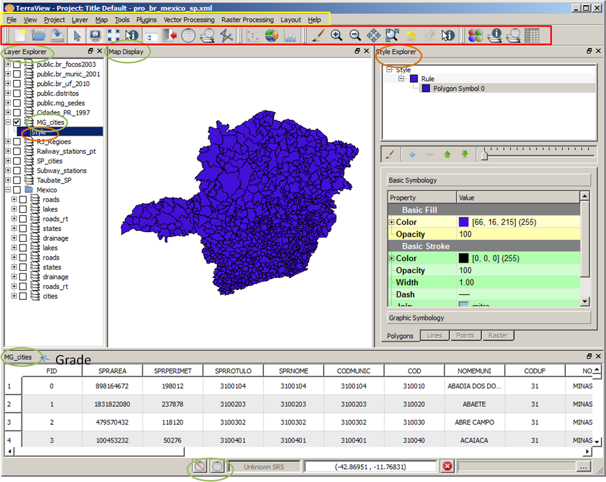

The
TerraView Main Window is
composed by Menubar,
Toolbar, Layer Explorer, Map Display, Grade (to show
the alphanumeric attributes), and the Style Explorer.
Usually the Style Explorer is closed after changing the layer visual
presentation
(color, basic fill, etc of polygons, lines, points and raster).

Starting TerraView
Once you launch TerraView, it starts with an
empty project named default_project that can be
saved at the end with another name. Note the TerraView top header
showing the project title and the corresponding xml file where project information will be saved. TerraView
- Project: Default Title- default_project.xml. To start viewing something go directly to the Project Menu and add some layers to be visualized at the map display.
Project Menu
Click on Project > Add Layer...
to add layers to the project and
choose the layer type:
Vector... to choose one
file of Esri shapefile , MapInfo, GeoJSON, GML, or
KML format.
Raster... to
choose one file of
image format. To choose more than one click on Ctrl+ filename.
All
Sources... to
select a datasource from where to pick up
the data. See the Data Source Selector Interface.
The Data
Source Selector interface allows to define a directory of vector files, a directory
of
raster files, a PostGIS database or a Microsoft Access database as a
data source from where to pick up some data.
Also it is possible to use Project > Add
Folder... and drag some layers into this folder to
organize better the Layer Explorer. Note the mexico folder at
the example showed above. If a folder is removed, all layers inside are
also removed.
Click on Project > Properties... to change the Default Title that appear at the TerraView top header. To save the project go to File Menu.
File Menu
Click on File menu to Save Project, Save
Project as,
create a New
Project, or
view the Recent
Projects
opened before. The project name informed here is the name of the xml file which keep information about the project.
Layer Explorer
The
Layer Explorer shows all layers selected by the menu Project >
Add
Layer.... Check the box of one or more layer and press (pincel) to view then at the
Map Display. In our example only MG_cities is
checked. The Spatial Reference System of the Map Display will be
the first valid SRID among the layers checked. It is also possible
to set the Map Display SRID by right-clicking over the map display area
as explained here. To find out the layer SRID, right-click over a layer name and choose Properties.... More actions over a layer are explained below.
Layer
Explorer - Selecting
one or more layers
Clicking over a layer name makes it selected and the actions available
from the context menu can be executed. Note that is does not need
to be checked.
Right-clicking over a layer name makes it selected and shows a context
menu of actions that can be executed over a layer.
Shift+clickingallows to select a consecutive set of
layers by clicking over the first and the last layer names in the
tree. A highlighted area appear in the tree and right-clicking over this area shows a
context
menu of actions that can be executed over more than one layer, for example Remove Layer(s).
Ctrl+clicking
allows to select a non-consecutive set of layer by clicking over layer names in the tree. All layer names will became highlighted and right-clicking over one of then shows a context menu of actions that
can be executed over all selected layer.
Layer
Explorer - Actions over one layer
Remove Selection > remove any selection at
the map display and show all the objects displayed with the original Style (color, mark, etc).
Grouping...
Histogram...
Scatter...
Pie/Bar Chart...
Show table
Styler Explorer
Fit Layer on the Map Display
Fit Selected objects on the Map Display
Pan to the Selected objects on the Map
Display
Remove Layer(s)
Inform SRS...
Properties...
Query
Remove Layer(s)
Contrast...
Mixture Model...
Segmenter...
Layer
Explorer - Actions over more than
one layer
Fit Selected objects on the Map Display
Pan to the Selected objects on the Map
Display
Remove Layer(s)
Map Display
Style Explorer (color, mark, etc of polygons, lines, points, text)
Grade (numeric attributes)